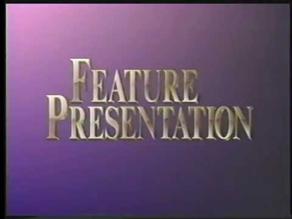
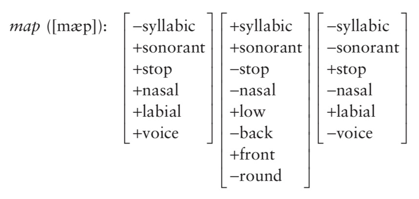

They’re inefficient
They obscure relations among segments
We can do better
They represent common groupings of sounds
They’re more efficient than lists
They get at the idea that some rules apply to groups because of some shared characteristic
What unites /w ɹ j/ as approximants?
Why are /m n ɲ ŋ/ grouped?
What’s the meaningful link between [pʰ tʰ kʰ]?
Why do we treat them as different from [p t k] in English?
… or from [b d g]?
Languages place these groups in opposition
In English, [pʰ tʰ kʰ] are different from [p t k]
In Spanish, [p t k] are different from [b d g]
In Spanish, [p t k] AND [pʰ tʰ kʰ] are different from [b d g]
This sure seems to be about voicing
In English, [pʰ tʰ kʰ] are different from [p t k] AND [b d g]
Could we say that this contrast is about aspiration (greater glottal airflow)?
So, it’s before nasal sounds?
… but also before [ɾ̃] as in “winter”
This is about nasality!
Abstract representations of the properties of sounds which make them phonologically distinct in languages
They capture linguistic contrasts
They are what natural classes are made of
They’re phonetically grounded
In Spanish, stops contrast on the basis of [+/- voice]
In English, vowel nasality is triggered only by [+nasal] sounds
Feature theories are designed to capture the contrasts present in languages
Sounds in a natural class share features
This is the nature of a natural class
Unary features have one state (e.g. [+coronal])
Binary features have two states (e.g. [+voice] or [-voice])
Each feature describes many segments
… but every segment can be specified using one specific combination

[-sonorant] -> [-voice] / __#
[-cont] -> [+nasal] / V__V
[+syllabic] -> [+nasal] / __[+nasal]
[-cont, +coronal] -> ∅ / __[+lateral]
You can split sounds up in many different ways
Each approach will have some benefits, and some downsides
Every sound is specified in terms of distinctive features
… but some sets will use different features to do it
We’re going to use a relatively vanilla set of features
Designed to work effectively in a variety of problems across languages
… but there are other approaches
Please use the feature specifications we’ve given you for this class!
… but he wants you to learn the local standard
If you see him pausing or checking the chart, that’s what’s up!
Features allow us to access some of the contrasts made in language directly.
We can use features to write our rules more elegantly
From here out, you’ll want to use features to write your rules
Language seems to use features, so we will too!